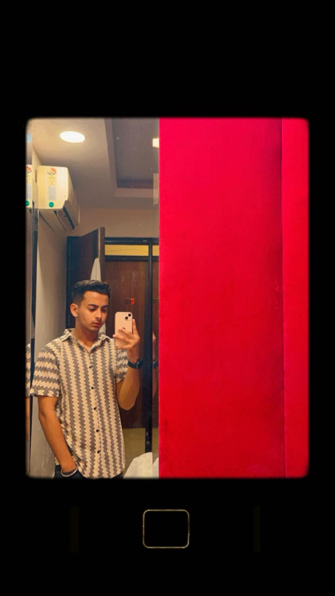

About Me
>Here are pictures of me to get an idea of how good i look!
Hii I am William, I have done my 12th grade from india in Non Medical field and I am an individual who finds joy in the art of technology and language. My journey has been marked by hunger of knowledge in the realms of natural language processing and artificial intelligence. This passion has driven me to explore innovative ways to make information more accessible and meaningful for users worldwide. I thought of going in computer programming but i got to know about this multi branch course that the college was offering that could make me explore my creativity as well as my problem solving skills
After i enrolled in this course i researched about it and i felt i could do more justice to this instead of spending my time just coding for a company.
Hobbies
- When I'm not working I am more of a reader and like to read fictional books, the cult classics like "Pride and Prejudice"and much more.
- Besides reading, I also try to explore cliffs and hills and love to go on an adventurous trail now and then.
"When you have a dream, you've got to grab it and never let go